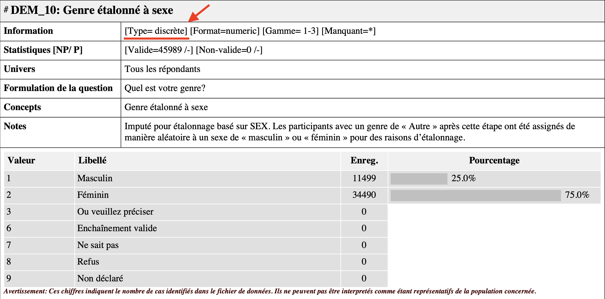
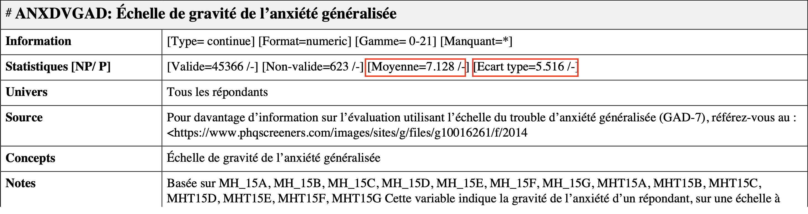
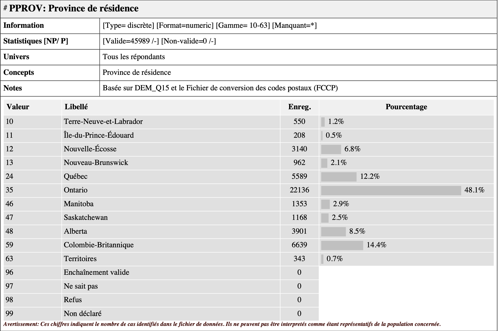

Important : Ce guide assume que vous savez comment :
Vous pouvez cliquer sur les liens ci-dessus pour consulter les guides associées.
Dans le dernier guide (Importer une base de données), nous avons appris comment importer une banque de données dans R. À des fins de démonstrations, nous utiliserons la même banque de données dans ce guide.
Pour suivre cette démonstration, vous devez préalablement :
RCC-5323-F-2020-SM_F1.csv) ainsi que la documentation
Odesi concernant son contenu (RCC-5323-F-2020-SM.pdf). Ces
documents sont disponibles sur Studium. Voici comment y accéder :Ateliers R >
Données pour les exemples
RCC-5323-F-2020-SM_F1.csv à l’objet
donnees_brutes). Voici la syntaxe nécessaire :library(readr)
donnees_brutes <- read_csv("folder path")Vous devriez donc avoir dans votre environnement l’objet
donnees_brutes. On peut regarder à quoi ressemble cet objet
en exécutant simplement son nom :
donnees_brutes## # A tibble: 45,989 × 6
## MH_05 DEM_10 ANXDVGAD PPROV PAGEGR ...6
## <dbl> <dbl> <dbl> <dbl> <dbl> <lgl>
## 1 3 2 11 35 6 NA
## 2 3 2 5 13 7 NA
## 3 1 1 0 12 4 NA
## 4 2 1 10 48 4 NA
## 5 3 2 11 59 7 NA
## 6 2 1 0 35 7 NA
## 7 2 1 0 59 10 NA
## 8 1 1 0 59 10 NA
## 9 4 2 12 35 8 NA
## 10 4 2 16 13 4 NA
## # … with 45,979 more rowsLe output ressemble bel et bien à un banque de données, ce
qui est bon signe. On peut constater qu’elle comprend 45’989
observations (les rangés) et 6 variables (les colonnes :
MH_05, DEM_10, ANXDVGAD,
PPROV, PAGEGR et ...6).
Note: La 6ième colonne (...6) n’est pas
vraiment une variable. Odesi semble toujours ajouter une colonne
supplémentaire rempli de données manquantes (NA). Vous
pouvez l’ignorer.
Lorsqu’on travail avec des variables dans R, il est bon de savoir distinguer leur format (propriété informatique) et leur type (propriété théorique).
Le format indique de quelle manière les variables sont codées dans R.
Lorsque vous afficher un tibble (comme on l’a fait dans la
section précédente), les caractères directement en dessous du nom des
variables (entourés de <>) vous informent sur le
format de vos variables. Il existe plusieurs formats de
variables dans R (ex.: logique <lgl>, entier
<int>, etc.). Pour les besoins du cours, on va
seulement utiliser deux formats, soit numérique
(<dbl> pour double ou
numeric) et catégoriel (<fctr> pour
factor).
Sachez qu’il est possible de coder des variables de classe ordinale
<ord> dans R. Cela étant dit, ce type de variable est
rarement utilisé puisqu’il fait l’objet d’une certaine ambiguïté en
statistique (souvent traité comme continue dépendemment du nombre de
catégories). Soulignons également qu’il n’existe pas de format
particulier pour désigner les variables à intervalle dans R.
Lorsque vous travaillez dans R (ou lorsque vous faites des analyses quantitatives en général), c’est votre responsabilité de connaître (ou déterminer) le type des variables que vous utilisez. Le type d’une variable désigne son échelle de mesure. Le type « théoriquement approprié » d’une variable est parfois difficile à déterminer et plusieurs variables en psychologie se situent à la limite entre le continue et le discret/catégoriel (ex.: échelle de Likert à 7 ancrages).
Par ailleurs, les deux formats que nous utiliserons dans R
(<fctr> et <dbl>) ne permettent
pas de représenter parfaitement les quatre échelles de mesure décrites
dans votre manuel (Haccoun
et Cousineau, 2010, p. 20 à 26). Pour des raisons pratiques, nous
ferons simplement la distinction entre les variables de type 1
(discrète = format catégoriel
<fctr>) et les variables de type 2
(continue = format numérique
<dbl>).
Dans le contexte de votre TP, vous aurez accès à la documentation Odesi, qui vous indique comment les créateurs de la banque de données que vous utilisez ont définies les variables qui s’y trouvent. Par exemple :

La documentation représente un bon guide pour déterminer le type de vos variable. Cela étant dit, je vous déconseil de vous fier aveuglément à la documentation puisque ces étiquettes sont parfois tinter de subjectivité. D’une part, il est bon de développer un esprit critique par rapport aux propriétés des variables qu’on utilise en recherche. D’autre part, la documentation Odesi ne fait pas de distinction entre les sous-types de variables discrètes (nominale et ordinale) et continues (à intervalles et de rapport). Dans votre TP, vous devrez quand même mentionner les échelles de mesure précises dans la description de vos variables.
La banque de données qu’on vient d’assigner à l’objet
donnees_brutes n’est pas encore formatée convenablement.
Voici quelques problèmes reliés au format de la banque de données brutes
:
<dbl>
(continue) et les valeurs sont en chiffresCes problèmes au niveau du format de vos données rendent l’interprétation de vos résultat plus difficile et pourraient même entraîner des erreurs dans vos analyses (ex.: données manquantes). Pour y remédier, on va construire une nouvelle banque de données « propre » dans laquelle on va inclure toutes nos variables reformatées correctement.
La première étape consiste à créer la structure de base de notre
banque de données propre. Pour ce faire, nous aurons besoin d’activer le
package tibble. Voici la syntaxe complète :
library(tibble)
df <- tibble(id = 1:nrow(donnees_brutes))Je vous rassure tout de suite : vous n’avez pas besoin de
comprendre tous les petits détails de la deuxième ligne. Il est
suffisant de comprendre est que cette syntaxe assigne
(avec l’opérateur <-) tout ce qu’il y a à droite de
l’opérateur (tibble(id = 1:nrow(donnees_brutes))) à un
nouvel objet qu’on choisi d’appeller df.
Pour ceux qui souhaitent comprendre la partie à droite de l’opérateur
<-, la section suivante fournie une brève explication.
Si ça ne vous intéresse pas, vous pouvez aller directement à la section
2.
tibble(id = 1:nrow(donnees_brutes))
Le code ci-dessus combine deux fonctions (nrow() et
as_tibble()) et deux opérateurs R (= et
:) pour de répondre à deux sous-objectifs précis :
tibbleLa fonction tibble() retourne un objet de type
tibble, ce qui correspond à un type de
data frame (ou « banque de données ») ayant certaines
propriétés particulièrement utiles lorsqu’on travaille en
rmarkdown. Par exemple, lorsqu’on affiche une banque de
données, un objet de type tibble spécifie le format des
variables et limite le output à 10 observations, ce qui n’est pas le cas
pour un simple data frame :
data.frame(id = 1:24)## id
## 1 1
## 2 2
## 3 3
## 4 4
## 5 5
## 6 6
## 7 7
## 8 8
## 9 9
## 10 10
## 11 11
## 12 12
## 13 13
## 14 14
## 15 15
## 16 16
## 17 17
## 18 18
## 19 19
## 20 20
## 21 21
## 22 22
## 23 23
## 24 24tibble(id = 1:24)## # A tibble: 24 × 1
## id
## <int>
## 1 1
## 2 2
## 3 3
## 4 4
## 5 5
## 6 6
## 7 7
## 8 8
## 9 9
## 10 10
## # … with 14 more rowsLa syntaxe id = 1:nrow(donnees_brutes) génère la
variable id, qui correspond à une suite de nombres entiers
allant de 1 à 45’989. Plus spécifiquement, la fonction
nrow(donnees_brutes) assure que votre variable
d’identification id aura toujours le même nombre
d’observations que votre banque de données brutes.
nrow(donnees_brutes)## [1] 45989Avoir une variable qui représente chaque observation individuellement
(id) est parfois nécessaire pour utiliser des fonctions. De
plus, les étapes suivantes nécessitent que votre nouvelle banque de
données df soit exactement de la même longueur que votre
banque de données brutes donnees_brutes.
Les deux prochaines sections (2.1 et 2.2) visent à vous familiariser avec la manipulation de variables dans R. Les deux sous-sections suivantes présenteront la syntaxe nécessaire pour inclure
$Ça me semble un bon moment pour introduire l’opérateur de sélection
$, un outil très pratique lorsqu’on travail avec des objets
de type data frame. Certaines fonctions (ex.:
frq(), que nous verrons dans la prochaine section)
s’appliquent principalement à des variables, donc il est bon de savoir
comment y référer directement. L’opérateur $ doit être
placé directement après le nom de votre banque de données, ce qui vous
permet de sélectionner la variable qu’il contient. Voici comment faire
:
banque_de_donnees$variableAfficher une variable est légèrement plus complexe qu’afficher une banque de données. Il n’est généralement pas très utile de simplement appeller le nom d’une variable pour l’afficher puisque faire cette commande affiche littéralement toute la variable. Par exemple :
x <- 1:500 # traduction : la variable x est égale à une suite d'entiers allant 1 à 500
x # Afficher## [1] 1 2 3 4 5 6 7 8 9 10 11 12 13 14 15 16 17 18
## [19] 19 20 21 22 23 24 25 26 27 28 29 30 31 32 33 34 35 36
## [37] 37 38 39 40 41 42 43 44 45 46 47 48 49 50 51 52 53 54
## [55] 55 56 57 58 59 60 61 62 63 64 65 66 67 68 69 70 71 72
## [73] 73 74 75 76 77 78 79 80 81 82 83 84 85 86 87 88 89 90
## [91] 91 92 93 94 95 96 97 98 99 100 101 102 103 104 105 106 107 108
## [109] 109 110 111 112 113 114 115 116 117 118 119 120 121 122 123 124 125 126
## [127] 127 128 129 130 131 132 133 134 135 136 137 138 139 140 141 142 143 144
## [145] 145 146 147 148 149 150 151 152 153 154 155 156 157 158 159 160 161 162
## [163] 163 164 165 166 167 168 169 170 171 172 173 174 175 176 177 178 179 180
## [181] 181 182 183 184 185 186 187 188 189 190 191 192 193 194 195 196 197 198
## [199] 199 200 201 202 203 204 205 206 207 208 209 210 211 212 213 214 215 216
## [217] 217 218 219 220 221 222 223 224 225 226 227 228 229 230 231 232 233 234
## [235] 235 236 237 238 239 240 241 242 243 244 245 246 247 248 249 250 251 252
## [253] 253 254 255 256 257 258 259 260 261 262 263 264 265 266 267 268 269 270
## [271] 271 272 273 274 275 276 277 278 279 280 281 282 283 284 285 286 287 288
## [289] 289 290 291 292 293 294 295 296 297 298 299 300 301 302 303 304 305 306
## [307] 307 308 309 310 311 312 313 314 315 316 317 318 319 320 321 322 323 324
## [325] 325 326 327 328 329 330 331 332 333 334 335 336 337 338 339 340 341 342
## [343] 343 344 345 346 347 348 349 350 351 352 353 354 355 356 357 358 359 360
## [361] 361 362 363 364 365 366 367 368 369 370 371 372 373 374 375 376 377 378
## [379] 379 380 381 382 383 384 385 386 387 388 389 390 391 392 393 394 395 396
## [397] 397 398 399 400 401 402 403 404 405 406 407 408 409 410 411 412 413 414
## [415] 415 416 417 418 419 420 421 422 423 424 425 426 427 428 429 430 431 432
## [433] 433 434 435 436 437 438 439 440 441 442 443 444 445 446 447 448 449 450
## [451] 451 452 453 454 455 456 457 458 459 460 461 462 463 464 465 466 467 468
## [469] 469 470 471 472 473 474 475 476 477 478 479 480 481 482 483 484 485 486
## [487] 487 488 489 490 491 492 493 494 495 496 497 498 499 500Il est donc préférable d’utiliser des fonctions spécialisées pour
regarder nos variables. Comme vous pouvez l’imaginer, il existe une
multitude de fonctions de ce type. Plusieurs fonctions mathématiques
rudimentaires sont inclues au package R de base. Je mentionne également
deux packages offrant des fonctions utiles à la description de variables
: sjmisc et jmv.
Le package R de base fourni plusieurs fonctions pour calculer les
statistiques descriptives d’une variable. Par exemple, la fonction
mean() permet d’obtenir la moyenne et la fonction
median() la médiane. Voici quelques fonctions pratiques à
retenir :
mean()median()sd()var()min()max()Si vous utilisez les fonctions ci-dessus avec les variables de la banque de données brutes, vous remarquerez que les valeurs des statistiques descriptives du output sont différentes que celles que l’on retrouve dans la documentation Odesi. Par exemple :
mean(donnees_brutes$ANXDVGAD)## [1] 8.372894sd(donnees_brutes$ANXDVGAD)## [1] 11.9502
Cette différence s’explique par le fait que les données manquantes
(observations avec un score de 99) n’ont pas encore été
recodées correctement. Nous addresserons ce problème dans la section
3.1.1 de ce guide.
Il importe également de mentionner que les fonctions ci-dessus
assument toutes que la variable que vous souhaitez décrire ne contient
pas de données manquantes (NA). Si c’est le cas, elles
retourneront NA. Par exemple :
variable_avec_NA <- c(4, 9, NA, 17, 1)
mean(variable_avec_NA)## [1] NAvariable_sans_NA <- c(4, 9, 2, 17, 1)
mean(variable_sans_NA)## [1] 6.6Pour utiliser ces fonctions sur une variable contenant des données
manquantes, vous devez indiquer explicitement de retirer les données
manquantes à l’aide de l’argument na.rm = (qui signifie «
NA remove ») :
mean(variable_avec_NA, na.rm = TRUE) # Par défaut, na.rm = FALSE ## [1] 7.75Fonction utile
La fonction descriptives du package jmv permet
(comme son nom l’indique) d’obtenir une panoplie de statistiques
descriptives. Voici la syntaxe pour l’utiliser :
library(jmv)
descriptives(donnees_brutes, ANXDVGAD)Les statistiques que vous obtenez ci-dessus sont toujours inclues par défaut. Cela dit, vous pouvez facilement ajouter des arguments pour en obtenir d’autres. Par exemple, voici la syntaxe pour ajouter le mode au output :
descriptives(donnees_brutes, ANXDVGAD,
mode = TRUE)Comme nous l’avons vue dans la section 3 du guide
package.html, vous pouvez toujours consulter la liste
complète des options que vous offre la fonction
descriptives() en exécutant la commande
?descriptives() dans la console.
La fonction frq() fait partie du package
sjmisc et permet d’obtenir le tableau des fréquences pour
une variable. Cette fonction est particulièrement utile avec les
variables discrètes, mais elle peut également être utilisée avec des
variables continues. Voici la syntaxe pour obtenir le tableau des
fréquences de la variable PPROV de la banque de données
brutes :
library(sjmisc)
frq(donnees_brutes$PPROV)## x <numeric>
## # total N=45989 valid N=45989 mean=36.63 sd=13.38
##
## Value | N | Raw % | Valid % | Cum. %
## ----------------------------------------
## 10 | 550 | 1.20 | 1.20 | 1.20
## 11 | 208 | 0.45 | 0.45 | 1.65
## 12 | 3140 | 6.83 | 6.83 | 8.48
## 13 | 962 | 2.09 | 2.09 | 10.57
## 24 | 5589 | 12.15 | 12.15 | 22.72
## 35 | 22136 | 48.13 | 48.13 | 70.85
## 46 | 1353 | 2.94 | 2.94 | 73.80
## 47 | 1168 | 2.54 | 2.54 | 76.34
## 48 | 3901 | 8.48 | 8.48 | 84.82
## 59 | 6639 | 14.44 | 14.44 | 99.25
## 63 | 343 | 0.75 | 0.75 | 100.00
## <NA> | 0 | 0.00 | <NA> | <NA>Le output me montre du nombre d’observations (colonne
N) pour chacune des valeurs (colonne Value) de
la variable PPROV. Il fournit également la moyenne
(mean=36.63) et l’écart-type (sd=13.38), deux
statistiques qui ne font pas beaucoup de sens dans ce cas-ci puisque la
variable qu’on observe est catégorielle (PPROV =
Province de résidence).
Je vous conseil de toujours utiliser la fonction
frq() lorsque vous préparer vos données. Ce
faisant, il est facile de vérifier la
validité/plausibilité des différentes valeurs de vos
variables — c.-à-d. qu’aucun score erroné ne s’est glissé dans la banque
de données que vous utilisez. Par exemple, on peut effectuer cette
vérification en comparant le output ci-dessus à la
documentation Odesi concernant la variable PPROV :

Je peux ainsi confirmer que toutes les valeurs du tableau de
fréquence généré précédemment semblent correctes. Je constate au passage
que cette variable ne contient pas de données manquantes
(96, 97, 98 ou
99).
Cette section décrit comment remplir la nouvelle banque de données
avec une version « corrigée » de chaque variable de la banque de données
brutes. Normalement, à ce stade, les seuls objets que vous devriez avoir
dans votre environnement sont les deux data frame que nous
avons créés (donnees_brutes et df). Tel que
mentionné à la section 0.2 de ce document, nous apprendrons seulement à
créer des variables de type numérique <dbl> et
catégorielle <fctr>.
Nous utiliserons la variable “Échelle de gravité de l’anxiété
généralisée” (ANXDVGAD) à titre d’exemple. Voici un résumé
rapide des informations importantes qu’on peut tirer de la documentation
Odesi :
<dbl> donc déjà correcte - Youpi!!!)96, 97, 98 ou
99Avant de passer à la prochaine étape, vérifions si les valeurs de la
variable ANXDVGAD dans ma banque de données brutes sont
valides :
frq(donnees_brutes$ANXDVGAD)## x <numeric>
## # total N=45989 valid N=45989 mean=8.37 sd=11.95
##
## Value | N | Raw % | Valid % | Cum. %
## ---------------------------------------
## 0 | 4271 | 9.29 | 9.29 | 9.29
## 1 | 2795 | 6.08 | 6.08 | 15.36
## 2 | 3330 | 7.24 | 7.24 | 22.61
## 3 | 3590 | 7.81 | 7.81 | 30.41
## 4 | 3479 | 7.56 | 7.56 | 37.98
## 5 | 3359 | 7.30 | 7.30 | 45.28
## 6 | 3315 | 7.21 | 7.21 | 52.49
## 7 | 3515 | 7.64 | 7.64 | 60.13
## 8 | 2408 | 5.24 | 5.24 | 65.37
## 9 | 2105 | 4.58 | 4.58 | 69.94
## 10 | 1804 | 3.92 | 3.92 | 73.87
## 11 | 1638 | 3.56 | 3.56 | 77.43
## 12 | 1446 | 3.14 | 3.14 | 80.57
## 13 | 1328 | 2.89 | 2.89 | 83.46
## 14 | 1320 | 2.87 | 2.87 | 86.33
## 15 | 1033 | 2.25 | 2.25 | 88.58
## 16 | 919 | 2.00 | 2.00 | 90.58
## 17 | 852 | 1.85 | 1.85 | 92.43
## 18 | 767 | 1.67 | 1.67 | 94.10
## 19 | 660 | 1.44 | 1.44 | 95.53
## 20 | 511 | 1.11 | 1.11 | 96.64
## 21 | 921 | 2.00 | 2.00 | 98.65
## 99 | 623 | 1.35 | 1.35 | 100.00
## <NA> | 0 | 0.00 | <NA> | <NA>Le seul problème qu’on observe est que les données manquantes
(99) ne sont pas considérées comme telle. La prochaine
section explique comment corriger ce problème avant d’inclure la
variable à notre banque de données propres.
Garder les données manquantes en chiffre dans la banque de données
propres invaliderait toutes les analyses subséquentes. Pour cette
raison, il faut modifier la variable ANXDVGAD de manière à
ce que les observations avec une valeur correspondant aux valeurs de
données manquantes (selon le dictionnaire de données Odesi, ces valeurs
sont 96, 97, 98 ou
99) soient transformées en données manquantes
(NA). On peut faire cela avec la syntaxe suivante :
donnees_brutes$ANXDVGAD_noMissing <- ifelse(donnees_brutes$ANXDVGAD %in% c(96, 97, 98, 99),
NA,
donnees_brutes$ANXDVGAD)Explications sur la syntaxe :
On utilise la fonction ifelse() pour tester si chaque
valeur de la variable ANXDVGAD est égale à 96, 97, 98 ou
99. Si c’est le cas, on remplace cette valeur par NA
(donnée manquante), sinon on conserve la valeur d’origine
(donnees_brutes$ANXDVGAD). La syntaxe
donnees_brutes$ANXDVGAD %in% c(96, 97, 98, 99) permet de
vérifier si chaque valeur de la variable ANXDVGAD est
présente dans le vecteur c(96, 97, 98, 99). Si c’est le
cas, la condition est vraie et la valeur est remplacée par
NA.
On peut vérifier si la modification a fonctionné en utilisant à
nouveau la fonction frq() sur la nouvelle variable qu’on
vient de créer ANXDVGAD_noMissing :
frq(donnees_brutes$ANXDVGAD_noMissing)## x <numeric>
## # total N=45989 valid N=45366 mean=7.13 sd=5.52
##
## Value | N | Raw % | Valid % | Cum. %
## ---------------------------------------
## 0 | 4271 | 9.29 | 9.41 | 9.41
## 1 | 2795 | 6.08 | 6.16 | 15.58
## 2 | 3330 | 7.24 | 7.34 | 22.92
## 3 | 3590 | 7.81 | 7.91 | 30.83
## 4 | 3479 | 7.56 | 7.67 | 38.50
## 5 | 3359 | 7.30 | 7.40 | 45.90
## 6 | 3315 | 7.21 | 7.31 | 53.21
## 7 | 3515 | 7.64 | 7.75 | 60.96
## 8 | 2408 | 5.24 | 5.31 | 66.27
## 9 | 2105 | 4.58 | 4.64 | 70.91
## 10 | 1804 | 3.92 | 3.98 | 74.88
## 11 | 1638 | 3.56 | 3.61 | 78.49
## 12 | 1446 | 3.14 | 3.19 | 81.68
## 13 | 1328 | 2.89 | 2.93 | 84.61
## 14 | 1320 | 2.87 | 2.91 | 87.52
## 15 | 1033 | 2.25 | 2.28 | 89.79
## 16 | 919 | 2.00 | 2.03 | 91.82
## 17 | 852 | 1.85 | 1.88 | 93.70
## 18 | 767 | 1.67 | 1.69 | 95.39
## 19 | 660 | 1.44 | 1.45 | 96.84
## 20 | 511 | 1.11 | 1.13 | 97.97
## 21 | 921 | 2.00 | 2.03 | 100.00
## <NA> | 623 | 1.35 | <NA> | <NA>Les valeurs arrêtent désormais à 21 et on compte 623
NA (ce qui correspond au nombre de 99 avant la
modification). Nous pouvons donc inclure cette variable à notre banque
de données propre avec l’esprit tranquille. On peut profiter de cette
opération pour donner un nom plus facile à se rappeler à notre variable
:
df$anxiete <- donnees_brutes$ANXDVGAD_noMissingVoici désormais à quoi ressemble notre banque de données propre :
df## # A tibble: 45,989 × 2
## id anxiete
## <int> <dbl>
## 1 1 11
## 2 2 5
## 3 3 0
## 4 4 10
## 5 5 11
## 6 6 0
## 7 7 0
## 8 8 0
## 9 9 12
## 10 10 16
## # … with 45,979 more rowsNous utiliserons la variable “Échelle de gravité de l’anxiété
généralisée” (ANXDVGAD) à titre d’exemple. Voici un résumé
rapide des informations importantes qu’on peut tirer de la documentation
Odesi :
10 = Terre-Neuve-et-Labrador11 = Île-du-Prince-Édouard12 = Nouvelle-Écosse13 = Nouvea-Brunswick24 = Québec35 = Ontario46 = Manitoba47 = Saskatchewan48 = Alberta59 = Colombie-Britanique63 = Territoires96, 97, 98 ou
99On peut vérifier ces informations à l’aide de la fonction
frq() :
frq(donnees_brutes$PPROV)## x <numeric>
## # total N=45989 valid N=45989 mean=36.63 sd=13.38
##
## Value | N | Raw % | Valid % | Cum. %
## ----------------------------------------
## 10 | 550 | 1.20 | 1.20 | 1.20
## 11 | 208 | 0.45 | 0.45 | 1.65
## 12 | 3140 | 6.83 | 6.83 | 8.48
## 13 | 962 | 2.09 | 2.09 | 10.57
## 24 | 5589 | 12.15 | 12.15 | 22.72
## 35 | 22136 | 48.13 | 48.13 | 70.85
## 46 | 1353 | 2.94 | 2.94 | 73.80
## 47 | 1168 | 2.54 | 2.54 | 76.34
## 48 | 3901 | 8.48 | 8.48 | 84.82
## 59 | 6639 | 14.44 | 14.44 | 99.25
## 63 | 343 | 0.75 | 0.75 | 100.00
## <NA> | 0 | 0.00 | <NA> | <NA>La fonction factor() permet de créer une variable de
type factor (facile à se rappeler!). La syntaxe suivante
permet d’assigner le résultat de cette fonction à une nouvelle variable
(PPROV_F) dans la banque de données
donnees_brutes :
donnees_brutes$PPROV_F <- factor(donnees_brutes$PPROV, # Variable originale
# Valeurs originales
levels = c(10,11,12,13,24,35,46,47,48,59,63),
# Nouvelles valeurs (Attention à l'ordre!!!)
labels = c("Terre-Neuve-et-Labrador",
"Île-du-Prince-Édouard",
"Nouvelle-Écosse",
"Nouvea-Brunswick",
"Québec",
"Ontario",
"Manitoba",
"Saskatchewan",
"Alberta",
"Colombie-Britanique",
"Territoires"))Rappel: les parties de code précédées d’un #
sont des commentaires, pas de la syntaxe! Voici la même syntaxe vide
pour copier-coller :
donnees_brutes$variable_F <- factor(donnees_brutes$variable,
levels = c(),
labels = c())On peut afficher le résultat :
donnees_brutes## # A tibble: 45,989 × 8
## MH_05 DEM_10 ANXDVGAD PPROV PAGEGR ...6 ANXDVGAD_noMissing PPROV_F
## <dbl> <dbl> <dbl> <dbl> <dbl> <lgl> <dbl> <fct>
## 1 3 2 11 35 6 NA 11 Ontario
## 2 3 2 5 13 7 NA 5 Nouvea-Brunswick
## 3 1 1 0 12 4 NA 0 Nouvelle-Écosse
## 4 2 1 10 48 4 NA 10 Alberta
## 5 3 2 11 59 7 NA 11 Colombie-Britani…
## 6 2 1 0 35 7 NA 0 Ontario
## 7 2 1 0 59 10 NA 0 Colombie-Britani…
## 8 1 1 0 59 10 NA 0 Colombie-Britani…
## 9 4 2 12 35 8 NA 12 Ontario
## 10 4 2 16 13 4 NA 16 Nouvea-Brunswick
## # … with 45,979 more rowsL’opération semble avoir fonctionnée. On peut donc inclure notre variable à la banque de données.
df$province <- donnees_brutes$PPROV_FVoici à quoi ressemble désormais notre banque de données propres :
df## # A tibble: 45,989 × 3
## id anxiete province
## <int> <dbl> <fct>
## 1 1 11 Ontario
## 2 2 5 Nouvea-Brunswick
## 3 3 0 Nouvelle-Écosse
## 4 4 10 Alberta
## 5 5 11 Colombie-Britanique
## 6 6 0 Ontario
## 7 7 0 Colombie-Britanique
## 8 8 0 Colombie-Britanique
## 9 9 12 Ontario
## 10 10 16 Nouvea-Brunswick
## # … with 45,979 more rowsPour vous exercer, vous pouvez compléter la banque de données propre en incluant le reste des variables.
À noter pour le TP :
Dans votre travail pratique, vous n’aurez pas besoin de
présenter et expliquer les étapes nécessaires pour préparer vos
données. Le code nécessaire pour importer les données sera
simplement inclu au bloc de code setup au tout début de
votre script .Rmd. Ce bloc de code ne s’affiche pas dans le
document final à cause de l’argument include=FALSE dans les
paramètres du bloc. Pour plus de détails, veuillez consulter la section
3.1 du guide Rédiger un script
RMarkdown.